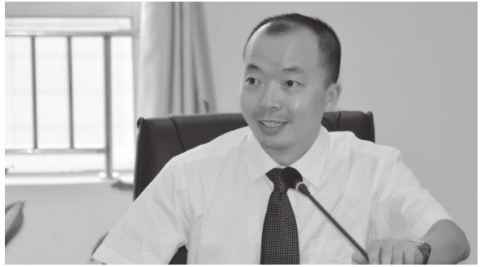

陆虎，男，1983年出生，重庆人氏，中共党员，毕业于陕西师范大学，中学历史高级教师，中学校长，名师工作室主持人。先后在东莞市教育局直属的两所民办公助类大型高收费私立学校（东华中学、光明中学，两所学校同期在校生人数都近两万）任教，从一线教师、班主任开始，历任级长、科长、年级主任、团委书记、思政处常务副主任（主持思政处工作）、教导处主任、校长助理、副校长等职，拥有丰富的大型学校管理经验和一线教育教学工作经验。陆虎推崇“发现教育”，提出“体验发现，幸福成长”的教育主张，并在学校管理和教育教学实践中取得了积极的办学效益和教育效果。
陆虎已经出版有《中小学爱国主义教育读本》（江西科学技术出版社）、《红颜长歌》（九州出版社）、《博物馆里的中国历史故事》（化学工业出版社）等多部著作，主持和参与国家、省、市级课题十余项，在核心期刊发表论文二十多篇（人大复印资料全文转载2篇），是东莞市教学能手、优秀班主任、学科带头人、名教师、卓越教师、基础教育高层次人才培养对象，是广东省骨干教师、广东省优秀青年教师、广东省优秀德育教师，是全国素质教育先进工作者，在全国、省、市级教学科研比赛和教师技能大赛中20多次斩获一等奖。同时担任人民教育出版社、北京师范大学出版社中学历史教材培训专家，陕西师范大学、华南师范大学教育硕士兼职导师，广东第二师范学院兼职教授，广东省中考命题专家库成员，东莞市中学历史教研会常务理事、副秘书长、学术委员会委员，东莞广播电视台特邀节目主讲嘉宾等社会职务。